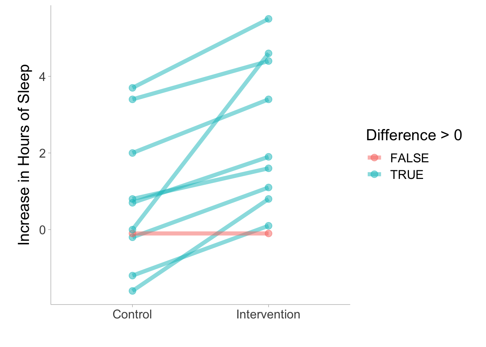

Sometimes the assumptions of parametric models (e.g., normality of model residuals) are suspect. This is often the case in psychology when using ordinal scales. In these cases a “non-parametric” approach may be helpful. A statistical test being non-parametric means that the parameters (i.e., mean and variance for “normal” Gaussian model) are not estimated; despite popular belief the data themselves are never non-parametric. Additionally, these tests are not tests of the median (Divine et al. 2018). Rather one can consider than as rank based or proportional odds tests. If the scores you are analyzing are not metric (i.e., ordinal) due to the use of a Likert-Scale and you still use parametric tests such as t-tests, you run the risk of a high false-positive probability (e.g., Liddell and Kruschke (2018)).
If the scores you are analyzing are not metric (i.e., ordinal) due to the use of a Likert scale and you still use parametric tests such as t-tests, you run the risk of a high false-positive probability (e.g., Liddel & Kruschke, 2018). Note that in German, scale anchors have been developed that are very similar to Likert scale but can be interpreted as metric (e.g., Rohrmann, 1978).
We will briefly discuss here two groups of tests that can be applied to the independent and paired samples then present 3 effect sizes that can accompany these tests as well as their calculations and examples in R.
Here is a table for every effect size discussed in this chapter:
A simple transformation of the rank-biserial correlation and it represents the probability of superiority in one group relative to the other group. This section shows R code for both independent and dependent samples.
Also known as the Generalized Odds Ratio, it transforms the concordance probability to an Odds Ratio. This section shows R code for both independent and dependent samples.
A non-parametric alternative to the t-test is the Wilcoxon-Mann-Whitney (WMW) group of tests. When comparing two independent samples this is called a Wilcoxon rank-sum test, but sometimes referred to as a Mann-Whitney U Test. When using it on paired samples, or one sample, it is a signed rank test. These are generally referred to as tests of “symmetry” (Divine et al. 2018).
Wilcoxon signed rank test with continuity correction
data: extra by group
V = 0, p-value = 0.009091
alternative hypothesis: true location shift is not equal to 0
# Two Sample ------# data import from likertdata(mass, package ="likert")df_mass = mass |>as.data.frame() |> janitor::clean_names() # function needs input as a numeric# ordered factors can be converted to ranks# Again, the warning can be ignoredwilcox.test(rank(math_relates_to_my_life) ~ gender,data = df_mass)
Wilcoxon rank sum test with continuity correction
data: rank(math_relates_to_my_life) by gender
W = 23, p-value = 0.1104
alternative hypothesis: true location shift is not equal to 0
13.2 Brunner-Munzel Tests
Brunner-Munzel’s tests can be used instead of the WMW tests. The primary reason is the interpretation of the test (Munzel and Brunner 2002; Brunner and Munzel 2000; Neubert and Brunner 2007). Recently, Karch (2021) argued that the Mann-Whitney test is not a decent test of equality of medians, distributions or stochastic equality. The Brunner-Munzel test, on the other hand, provides a sensible approach to test for stochastic equality.
The Brunner-Munzel tests measure a rank based “relative effect” or “stochastic superiority probability”. The test statistic (\(\hat p\)) is essentially the probability of a value in one condition being greater than other while splitting the ties1. However, Brunner-Munzel tests can not be applied to the single group or one-sample designs.
\[
\hat{p} = P(X<Y)+ \frac{1}{2} \cdot P(X=Y)
\]
These tests are relatively new so there are very few packages offer Brunner-Munzel. Moreover, Karch (2021) argues that the stochastic superiority effect size (\(\hat{p}\)) offers a nuanced way to interpret group differences by visualizing observations as competitors in a contest. Propounded by scholars like Cliff (1993) and Divine et al. (2018), it views each observation from one group in a duel with every observation from another. If an observation from the first group surpasses its counterpart, it “wins,” and the group garners a point; tied observations yield half a point to each group. This concept can be further elucidated through a bubble plot, where placement above, below, or on the diagonal indicates the dominance of one group’s observation over the other. Other interpretations, like transforming p to the Wilcoxon-Mann-Whitney (WMW) odds or Cliff’s δ offer deeper insights. There are implementations of the Brunner-Munzel test in a few packages in R (i.e. lawstat, rankFD, and brunnermunzel). Karch (2021) recommends the brunnermunzel.permutation.test function from the brunnermunzel package. The TOSTER R package can also provide coverage (Läkens 2017; Caldwell 2022).
# Install package for data cleaning# install.packages('janitor')library(janitor)# Paired sampleslibrary(TOSTER)data(sleep)# When sample sizes are small# a permutation version should be used.# When this is done a seed should be set.set.seed(2124)brunner_munzel(extra ~ group,data = sleep,paired =TRUE,perm =TRUE)
Paired Brunner-Munzel permutation test
data: extra by group
t = -3.7266, df = 9, p-value = 0.003906
alternative hypothesis: true relative effect is not equal to 0.5
95 percent confidence interval:
0.1233862 0.3866138
sample estimates:
p(X<Y) + .5*P(X=Y)
0.255
# Two Sample# data import from likertdata(mass, package ="likert")df_mass = mass |>as.data.frame() |>clean_names() # function needs input as a numeric# ordered factors can be converted to ranks# Again, the warning can be ignoredset.seed(24111)TOSTER::brunner_munzel(rank(math_relates_to_my_life) ~ gender,data = df_mass,paired =FALSE,perm =TRUE)
two-sample Brunner-Munzel permutation test
data: rank(math_relates_to_my_life) by gender
t = -2.1665, df = 17.953, p-value = 0.0642
alternative hypothesis: true relative effect is not equal to 0.5
95 percent confidence interval:
0.04761905 0.54961243
sample estimates:
p(X<Y) + .5*P(X=Y)
0.2738095
13.3 Rank-Based Effect Sizes
Since the mean and standard deviation are not estimated for a WMW or Brunner-Munzel test, it would be inappropriate to present a standardized mean difference (e.g., Cohen’s d) to accompany these tests. Instead, a rank based effect size (i.e., based on the ranks of the observed values) can be reported to accompany the non-parametric statistical tests.
13.3.1 Rank-Biserial Correlation
The rank-biserial correlation (\(r_{rb}\)) is considered a measure of dominance. The correlation represents the difference between the proportion of favorable and unfavorable pairs or signed ranks. Larger values indicate that more of \(X\) is larger than more of \(Y\), with a value of (−1) indicates that all observations in the second, \(Y\), group are larger than the first, \(X\), group, and a value of (+1) indicates that all observations in the first group are larger than the second.
We can set a constant, \(H\), to be -1 when the rank positive rank sum is greater than or equal to the negative rank sum (\(R_{\oplus} \ge R_{\ominus}\)) or we can set \(H\) to 1 when the rank positive rank sum is less than the negative rank sum (\(R_{\oplus} < R_{\ominus}\)).
Then the confidence interval can be calculated and then back-transformed.
\[
CI_{r_{rb}} = \text{tanh}(Z_{rb} \pm 1.96 \cdot SE_{Z_{rb}})
\] In R, we can use the ses_calc() function in TOSTER package (Läkens 2017). For the following example, we will calculate the rank-biserial correlation in the sleep dataset:
# Dependent groupsdata(sleep)library(TOSTER)# When sample sizes are small# a permutation version should be used.# When this is done a seed should be set.set.seed(2124)ses_calc(extra ~ group,data = sleep,paired =TRUE)
The example shows a rank-biserial correlation is \(r_{rb}\) = .982 [.938, .995]. This suggests that nearly every individual in the sample showed an increase in condition 2 relative to condition 1. As you can see from the figure below, only one individual showed a decline (individual shown in red).

13.3.1.2 Independent Groups
Calculate the ranks for each observation across all observations of in group 1 and 2
In R, we can use ses_calc in the TOSTER package can be utilized to calculate \(r_{rb}\).
# Two Sample# install the janitor package for data cleaning# clean and import data from likertdata(mass, package ="likert")df_mass = mass |>as.data.frame() |> janitor::clean_names() # function needs input as a numeric# ordered factors can be converted to ranks# Again, the warning can be ignoredset.seed(24111)ses_calc(rank(math_relates_to_my_life) ~ gender,data = df_mass,paired =FALSE)
The example shows a rank-biserial correlation is \(r_{rb}\) = -.45 [-.78, .08].
13.3.2 Concordance Probability
In the two sample case, concordance probability is the probability that a randomly chosen subject from one group has a response that is larger than that of a randomly chosen subject from the other group. In the two sample case, this is roughly equivalent to the statistic of the Brunner-Munzel test. In the paired sample case, it is the probability that a randomly chosen difference score (\(D\)) will have a positive (+) sign plus 0.5 times the probability of a tie (no/zero difference). The concordance probability can go by many names. It is also referred to as the c-index, the non-parametric probability of superiority, or the non-parametric common language effect size (CLES).
The calculation of concordance can be derived from the rank-biserial correlation. The concordance probability (\(p_c\)) can be converted from the correlation.
\[
p_c = \frac{r_{rb} + 1 }{2}
\]
In R, we can use the ses_calc() function again along with the sleep data set. For repeated measures experiments, the concordance probability in dependent groups can be calculated utilizing the paired=TRUE argument in the ses_calc() function:
The Wilcoxon-Mann-Whitney odds (O’Brien and Castelloe 2006), also known as the “Generalized Odds Ratio”(Agresti 1980), essentially transforms the concordance probability into an odds ratio.
The odds can be converted from the concordance by taking the logit of the concordance. This will provide the log odds.
The exponential value of the log-odds will provide the odds on a more interpretable scale. Taking just the logit of the concordance probability would give us the log odds such that,
\[
\log(O_{WMW}) = \text{logit}(p_c)
\]
In R, we can calculate \(O_{WMW}\) by using the ses_calc() function from the TOSTER package:
Divine, George W, H James Norton, Anna E Barón, and Elizabeth Juarez-Colunga. 2018. “The Wilcoxon–Mann–Whitney Procedure Fails as a Test of Medians.”The American Statistician 72 (3): 278–86.
Karch, Julian D. 2021. “Psychologists Should Use Brunner-Munzel’s Instead of Mann-Whitney’s u Test as the Default Nonparametric Procedure.”Advances in Methods and Practices in Psychological Science 4 (2): 2515245921999602.
Läkens, Daniel. 2017. “Equivalence Tests: A Practical Primer for t-Tests, Correlations, and Meta-Analyses.”Social Psychological and Personality Science 1: 1–8. https://doi.org/10.1177/1948550617697177.
Liddell, Torrin M., and John K. Kruschke. 2018. “Analyzing Ordinal Data with Metric Models: What Could Possibly Go Wrong?”Journal of Experimental Social Psychology 79 (November): 328–48. https://doi.org/10.1016/j.jesp.2018.08.009.
Neubert, Karin, and Edgar Brunner. 2007. “A Studentized Permutation Test for the Non-Parametric Behrensfisher Problem.”Computational Statistics & Data Analysis 51 (10): 5192–5204. https://doi.org/10.1016/j.csda.2006.05.024.
O’Brien, Ralph G, and John Castelloe. 2006. “Exploiting the Link Between the Wilcoxon-Mann-Whitney Test and a Simple Odds Statistic.” In Proceedings of the Thirty-First Annual SAS Users Group International Conference, 209–31. Citeseer.
Note, for paired samples, this does not refer to the probability of an increase/decrease in paired sample but rather the probability that a randomly sampled value of X will be greater/less than Y. This is also referred to as the “relative” effect in the literature. Therefore, the results will differ from the concordance probability.↩︎